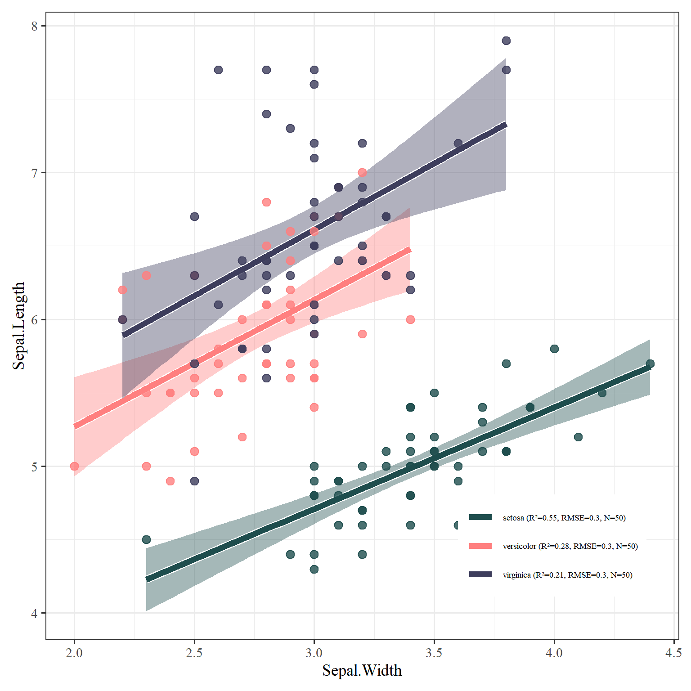

MyRcode
2026-04-21
Chapter 1 R基础绘图系列-散点图
本章介绍R基础绘图系列-散点图
1.1 散点拟合图
library(tidyverse)
library(ggplot2)
library(ggstyle)
data(iris)
# ==========================================
# 计算拟合参数并生成图例标签
# ==========================================
# 针对每个组别计算 R2, RMSE 和 N
stats_data <- iris %>%
select(Species, Sepal.Length, Sepal.Width) %>%
group_by(Species) %>%
summarize(
model = list(lm(Sepal.Width ~ Sepal.Length)), # 明确指定 x 和 y
N = n(),
.groups = "drop"
) %>%
rowwise() %>%
mutate(
r2 = summary(model)$r.squared,
rmse = sqrt(mean(summary(model)$residuals^2)),
legend_label = sprintf("%s (R²=%.2f, RMSE=%.1f, N=%d)", Species, r2, rmse, N)
) %>%
ungroup()
# 将标签转换为命名向量，方便映射到颜色上
legend_labels_map <- setNames(stats_data$legend_label, stats_data$Species)
ggplot(iris, aes(x = Sepal.Width, y = Sepal.Length, color = Species, fill = Species)) +
# 置信区间（只显示填充区域）
stat_smooth(method = "lm", se = FALSE, alpha = 0.2, color = NA, fill = "grey70") +
# 白色边缘效果（先绘制粗的白线）
stat_smooth(method = "lm", se = TRUE, size = 3, color = "white") +
# 主要回归线（后绘制细的彩色线）
stat_smooth(method = "lm", se = FALSE, size = 2.4) +
# 绘制散点
geom_point(alpha = 0.8, size = 3,shape = 21) +
# 颜色设置 (使用我们计算好的动态标签 legend_labels_map)
scale_color_manual(
values = c("#1e4d4d", "#ff7f7f", "#3d3d5c"),
labels = legend_labels_map
) +
scale_fill_manual(
values = c("#1e4d4d", "#ff7f7f", "#3d3d5c"),
labels = legend_labels_map
) +
theme_bw(base_size = 14) +
set_font() +
theme(
legend.position = c(0.8, 0.15),
legend.title = element_blank(),
legend.text = element_text(size = 7),
plot.margin = margin(10, 10, 10, 10)
) +
# 优化图例图标形状：取消散点和阴影，仅显示为粗横线
guides(
color = guide_legend(override.aes = list(size = 6, shape = NA, fill = NA)),
fill = "none" # 隐藏多余的填充图例
)
Figure 1.1: 图1: 散点拟合图示例